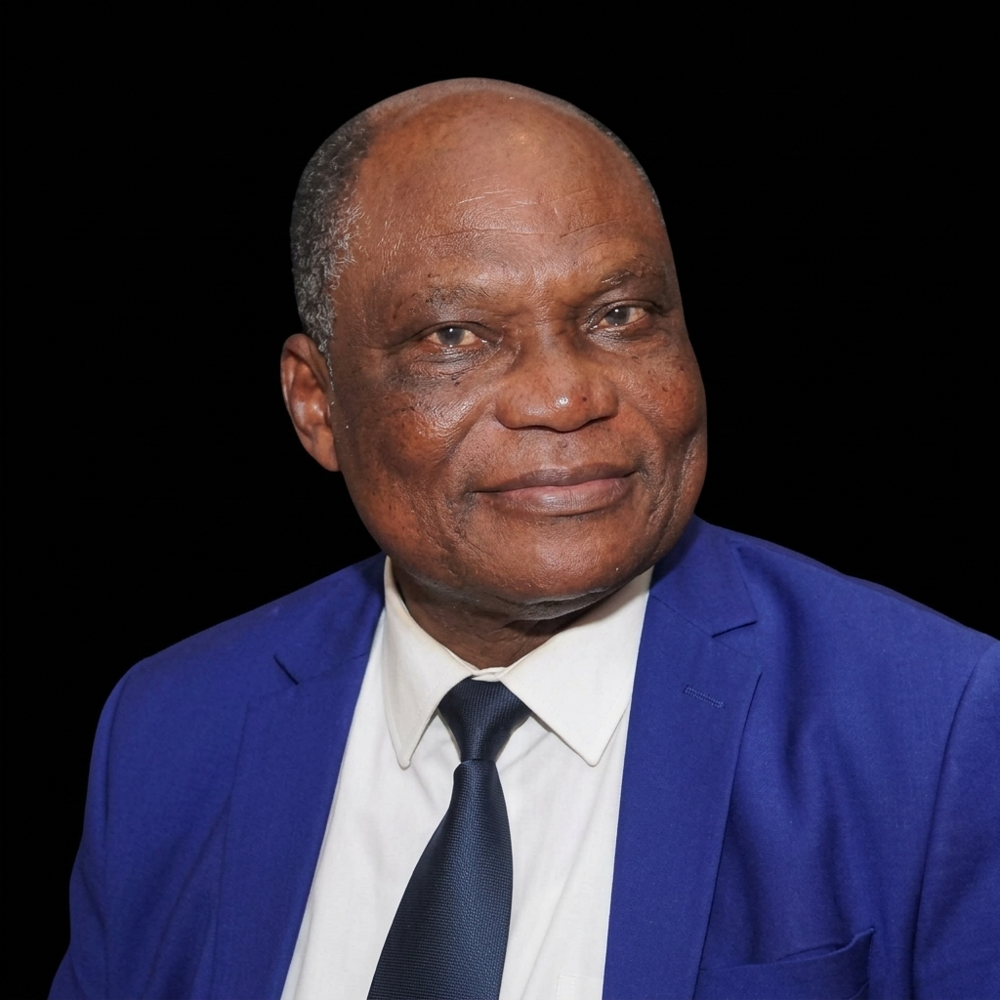
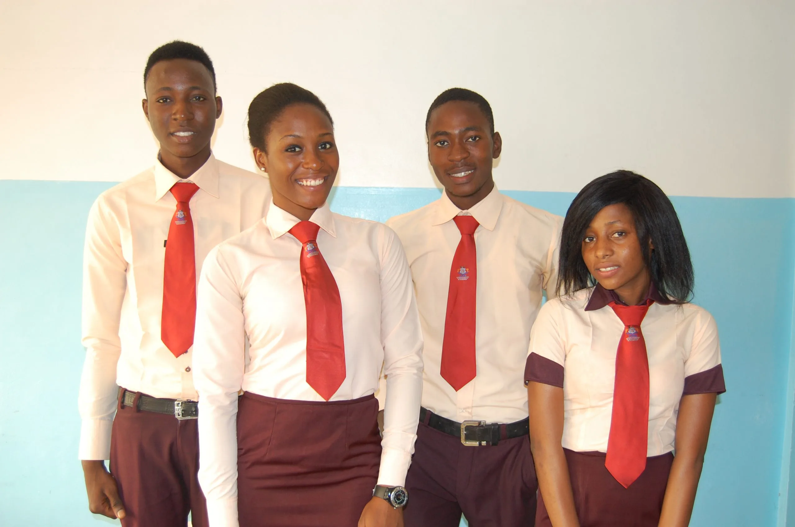
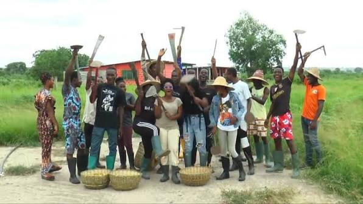
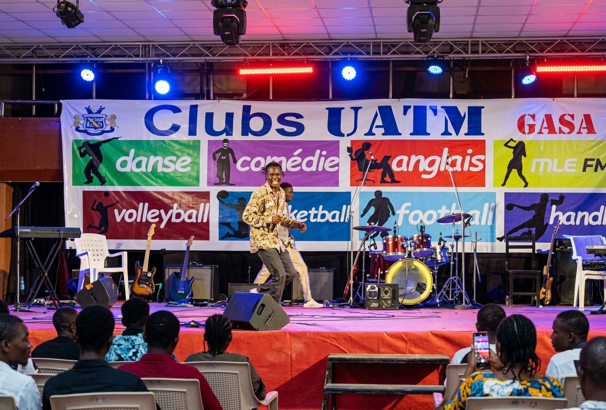

Sciences et Techniques
5 filières- Systèmes industriels
- Réseaux informatiques et télécoms
- Systèmes informatiques et logiciels
- Biotechnologie
- Énergie renouvelable
La première université privée du Bénin, depuis 1992. Licence et Master en présentiel ou en e-learning, dans les sciences, l’agronomie, le droit et la gestion.
Le fondateur
Président-Fondateur de l’UATM GASA
Le Dr Théophane AYI a créé l’UATM en 1992 avec une vision claire : offrir au Bénin une formation universitaire d’excellence accessible, pratique et tournée vers l’insertion professionnelle.
Sous sa direction, l’université est devenue la première institution privée d’enseignement supérieur du pays, formant des milliers de cadres qui excellent dans tous les secteurs d’activité à travers le monde.
« Notre ambition est de former des hommes et des femmes compétents, capables de transformer positivement leur environnement et de s’imposer partout dans le monde. »
— Dr Théophane AYI


Qui sommes-nous ?
Créée en 1992 par son président, le Dr Théophane AYI, l’UATM-GASA compte aujourd’hui plus de 3 000 étudiants inscrits dans 23 filières agréées par l’État.
Située à Cotonou, l’Université Africaine de Technologie et de Management GASA Formation forme ses étudiants à la gestion, aux sciences de l’ingénieur et aux technologies.
Elle allie rigueur académique et immersion technique, avec des infrastructures modernes et un corps enseignant expert, pour transformer les ambitions des étudiants en réussites concrètes.
Des formations agréées par l’État, réparties dans plusieurs grands domaines.
4 UFR proposant 23 filières et des activités culturelles


Une formation pensée pour que chaque étudiant trouve sa place sur le marché du travail.
Premier de la CEDEAO à HUAWEI ICT Competition et prix d’excellence GAB School Award 2015.
5 laboratoires équipés, bibliothèques, 250 ha de terres cultivables et fibre optique.
Des milliers d’anciens étudiants sur les 5 continents pour votre insertion professionnelle.
Certificats HUAWEI et formations courtes dès la première année.
Bourses d’excellence (25 %, 50 %, 100 %) selon les résultats et les conditions sociales.
Clubs de basketball, football, musique, danse, journalisme et développement personnel.
Enseignants du monde entier et étudiants de plus de 14 nationalités.
Intelligence artificielle, robotique, énergies renouvelables, marketing digital et big data.
Cinq sites au Bénin pour étudier près de chez vous.
Cotonou
2ème rue à gauche après le CEG Gbégamey
+229 65 78 77 21Abomey-Calavi
2ème étage, Bâtiment Continental Bank, face à la Mairie
+229 65 78 77 21Cotonou
À la descente du nouveau pont et PK6, route de Porto-Novo, carrefour Abattoir
+229 65 78 77 21Porto-Novo
Dangbéloun, Porto-Novo
+229 65 78 77 21Cotonou
Von Commissariat Kouhounou, Agla
+229 65 78 77 21Les inscriptions 2026 sont ouvertes. Appelez-nous ou écrivez-nous pour choisir votre filière.
Écrire à l’administration